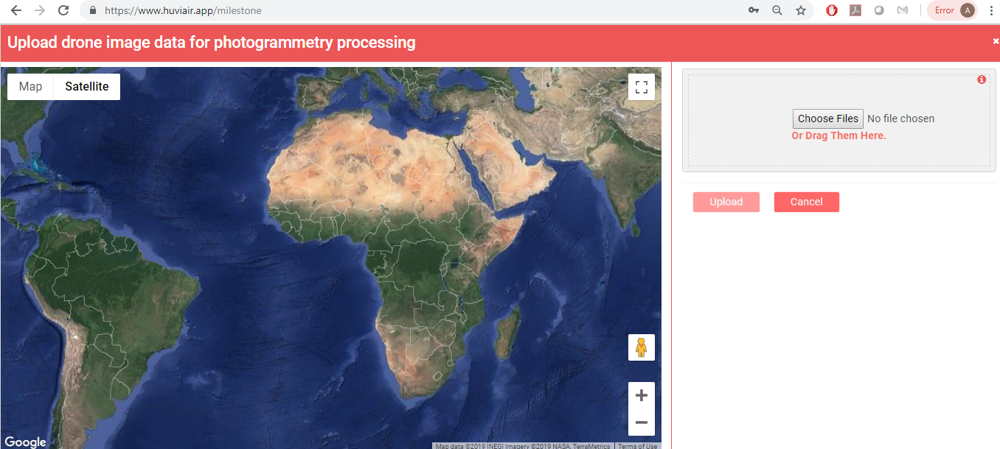
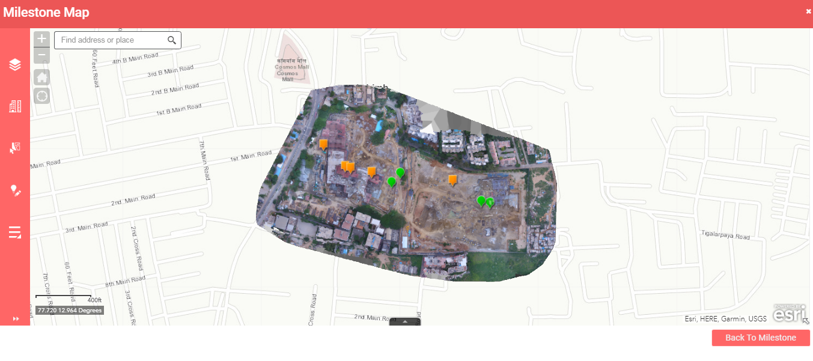
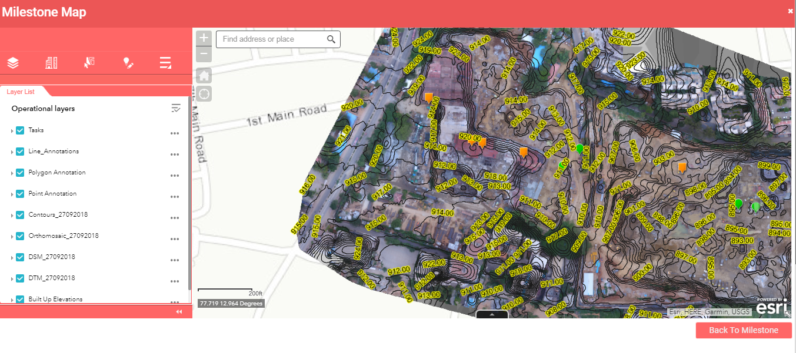
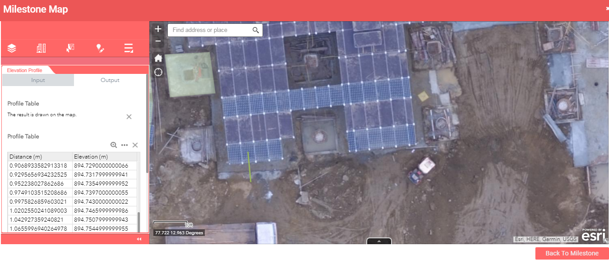

Made for Enterprises and Drone Service Providers, HUVIAiR enables drone data analytics and workflow management for the construction, infrastructure, mining, smart cities, oil and gas, renewable energy and natural resource management sectors.
Our enterprise users have super admin access. This allows them to view the client page. On this page, you can view the list of clients you have.
You can add a new client with all the relevant details. For each client, you can edit their details or delete the client itself.
Once you click on any client, you can view the project page.
Here, each project of that particular client is listed. You can add a new project by filling in the Project name, Location and Project type. You can edit or delete the project as well.
The milestone page has several components -
- Milestone cards
- New milestone button
- Activity log
- A panel with milestone, team, and support
These cards list out placeholders for the different types of drone data captured or processed within each milestone. Milestones are useful to manage and analyze records of the project across its entire life cycle.
Using Milestone cards you can upload and process the data you have collected from drones.
Each milestone contains the following types of data -
- Maps
- Images
- Videos
- Documents
All of these in combination give users a fantastic snapshot of the status of their projects.
The image upload is a seamless feature in this app. While uploading the app checks whether all the images have exif data which is very crucial for image processing to generate maps.

The map also shows you the location of each of the images from the drone. This helps you make sure that you have uploaded all the images that you need.
The 2D outputs of photogrammetry processing are overlaid on the map. The base layer is a satellite base map.
On the left panel all the tools are listed -

Layer list - On clicking this tool, the panel expands into showing you the list of layers.

Here we have the contours, orthomosaic, DSM and the DTM layers. You can control each layer using the 3 dots there. You can zoom to the layer, adjust the layer transparency, enable or disable pop-up, move the layer up or down, view the layer attributes in the attribute table.
Measurements and Location - This has many sub-tools. The outputs of these tools correlate to the layer that is currently visible.
Draw features - This tool can be used to annotate features onto the map.
The next set of tools that we will talk about are the advanced analytics tools.
Elevation profile tool -
This tool lets you select three types of profile lines - line, polyline and freehand polyline.

Drawing a line and selecting 'Execute' results in a table that gives the elevation values along the length of the line.
Volume tool -
The volume measurement tool measures the volume difference between the DSM and the DTM formed by interpolating the points of the input polygon.
This is a great tool to measure stockpiles in your site.
Here, Cut refers to the volume you would have to remove from the area (a pile) in order to flatten it.
Fill corresponds to the volume you would have to haul in, to "fill" a hole, in order to flatten the area.
The actual Volume measurement calculation is Volume = Cut - Fill.
The 3D map page gives users a 3D visualization of the mapped site. This map can be used to measure distances in three dimensions.
Any measurement will give the direct, horizontal and vertical distances. Further, hovering the mouse onto any point gives the latitude, longitude and elevation of that point.
Images -
Aerial images in sites such as construction, oil & gas sites helps users get a clear picture of the status and condition of assets or progress of construction/repair work.
Users can upload, view and share images of each milestone using this feature.
Videos -
Aerial videos executed strategically, work out to be very useful visual tools for site inspection purposes.
Project supervisors can remotely inspect sites much faster and put up the videos into this page here. This allows all team members to have access to the videos. Immediate decisions can be taken for day to day operations.
Users can upload, view and share videos of each milestone using this feature.
Documents -
Documents such as progress reports and presentations help teams share snapshots of milestone data within the team and senior management as well.
Team -
Using the Team option, project admins can add and delete team members, and grant or revoke access to them.